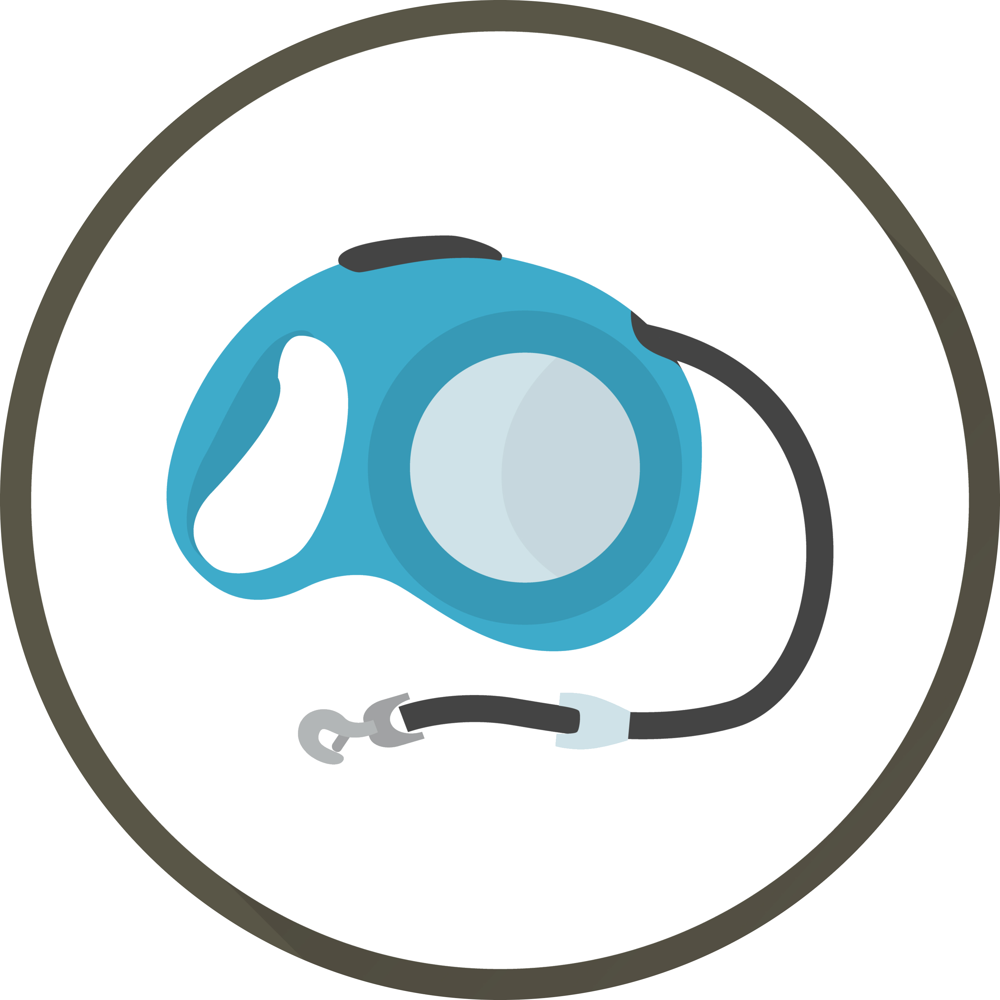

<ion-header>
  <ion-toolbar color="primary">
    <ion-buttons slot="start">
      <ion-back-button defaultHref="/"></ion-back-button>
    </ion-buttons>
    <ion-title>Walkies</ion-title>
  </ion-toolbar>
</ion-header>
<ion-content>

<!-- Section 1 -->
<section class="py-16 bg-white md:py-24">
  <div class="flex flex-col max-w-6xl px-10 mx-auto lg:flex-row">

      <div class="flex flex-col items-start justify-center w-full pr-10 mb-12 lg:w-1/2 lg:mb-0">
          <div class="relative">
              
              <h1 class="text-4xl font-extrabold tracking-tight text-gray-900 sm:text-5xl xl:text-6xl">
                  <span class="block xl:inline">Welcome Back </span>
                  <span class="block text-pink-500 xl:inline">Leigh !</span>
              </h1>
          </div>
          <p class="my-8 text-lg text-gray-600 md:text-xl">Have a pet dog who needs a walk ? Dont waste anymore time.</p>
          <div class="relative flex items-center pt-4 space-x-3">
              <a href="#_" class="relative text-2xl group">
                  <span class="relative z-10 px-5 py-2 font-bold leading-tight text-black bg-white border-4 border-gray-900 rounded-lg group-hover:bg-pink-400 group-hover:text-white">Find A Walker</span>
                  <span class="absolute top-0 right-0 w-full h-14 -mt-2.5 -mr-0.5 bg-black rounded-lg"></span>
              </a>

              <a href="#_" class="relative text-2xl group">
                 
              </a>
          </div>
      </div>

      <div class="flex flex-col items-center justify-center w-full lg:w-1/2">
          
      </div>
  </div>
</section>


</ion-content>
<!--DOG OWNER TABS-->
<ion-tabs>
  <ion-fab vertical="bottom" horizontal="center" translucent="true">
    <ion-fab-button [routerLink]="['/','choose-walk-details']">
      
    </ion-fab-button>
  </ion-fab>
  <ion-tab-bar slot="bottom" class="ion-no-border">
    <ion-tab-button tab="tab-encounters" class="active">
      <ion-icon name="home"></ion-icon>
    </ion-tab-button>
    <ion-tab-button tab="tab-conversations" class="comments" [routerLink]="['/','owner-pets']">
      <ion-icon name="paw"></ion-icon>
      <ion-badge></ion-badge>
    </ion-tab-button>
    <svg height="50" viewBox="0 0 100 50" width="100" xmlns="http://www.w3.org/2000/svg">
      <path d="M100 0v50H0V0c.543 27.153 22.72 49 50 49S99.457 27.153 99.99 0h.01z" fill="red" fill-rule="evenodd">
      </path>
    </svg>
    <ion-tab-button tab="tab-notifications" class="notifs" [routerLink]="['/','my-walks-owner']">
      <ion-icon name="walk"></ion-icon>
    </ion-tab-button>
    <ion-tab-button tab="tab-profile" [routerLink]="['/','my-profile-owner']">
      <ion-icon name="person"></ion-icon>
    </ion-tab-button>
  </ion-tab-bar>
</ion-tabs>